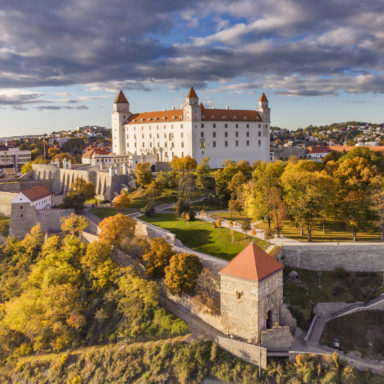
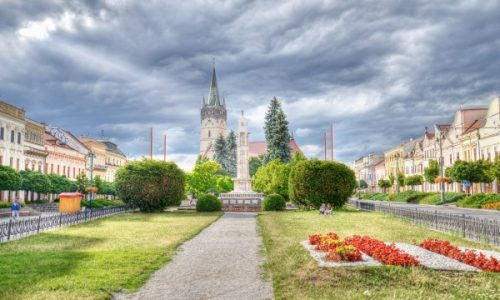
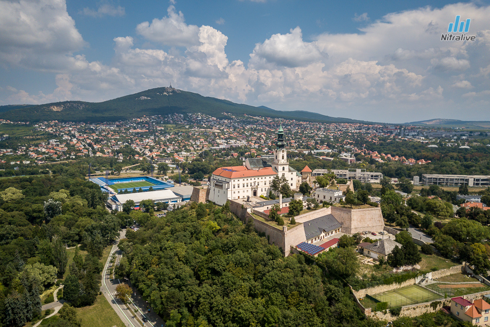
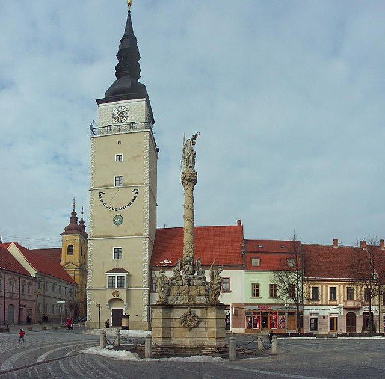
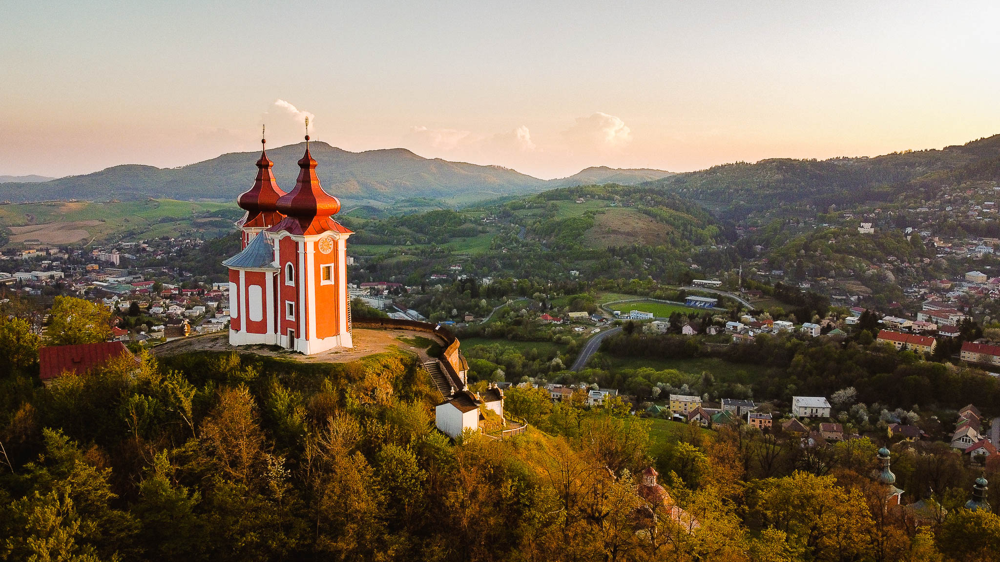

Bratislava
-hlavné mesto Slovenska
obyvateľov:421 000
rozloha:367,66 km2

-leží na hranici s Rakúskom a Maďarskom-hlavné mesto Slovenska
obyvateľov:421 000
rozloha:367,66 km2
Prešov
-leží vo východnej časti Slovenska na sútoku riek Torysa a Sekčov
obyvateľov:83 897
rozloha:70,43 km2

-je tak tretím najľudnatejším mestom na Slovensku-leží vo východnej časti Slovenska na sútoku riek Torysa a Sekčov
obyvateľov:83 897
rozloha:70,43 km2
Nitra
-preteká ňou rovnomenná rieka Nitra
obyvateľov:77 610
rozloha:100,48 km2

-je mesto ležiace v Nitrianskom kraji-preteká ňou rovnomenná rieka Nitra
obyvateľov:77 610
rozloha:100,48 km2
Trnava
-dostala prezývku „Malý Rím“
obyvateľov:63 194
rozloha:71,54 km2

-leží na riečke Trnávka, v centre Trnavskej pahorkatiny-dostala prezývku „Malý Rím“
obyvateľov:63 194
rozloha:71,54 km2
Banská Štiavnica
-známe je ťažbou kovov
obyvateľov:9 478
rozloha:46,74 km2

-je historické slobodné kráľovské banské mesto-známe je ťažbou kovov
obyvateľov:9 478
rozloha:46,74 km2